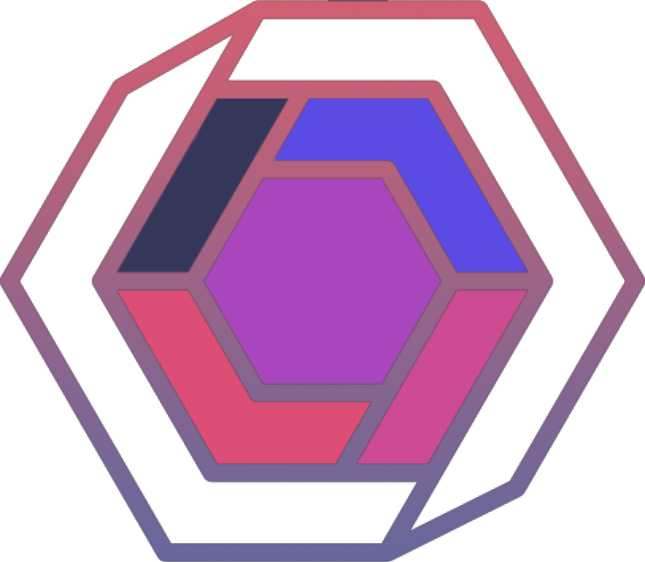

Whitepaper for Squarium $SQR
1. Introduction
Squared Finance was dreamt up as a student project for a course
in Agile Project Management for a group of Blockchain
Development students dubbed Billy Blaze Team by their teacher.
Squared Finance and its token Squarium($SQR) is built to learn
how to work together as a team and to grow our skills in working
within the Web3 and crypto space.
We decided to deploy a token as it seemed like the natural step
forward for our education and because we believed it would be
fun. Therefore we invite all of you to take part in this small
piece of history and to share in this jouney.
The team is available on Twitter and Discord, we will be there to hang out
and help any answers about the project!
2. Token Model and Network
As the base of this project we are using Solidity with the help of the Openzeppelin GitHub repository to construct a standard ERC20 token on the Polygon network using our skills to customize the code and apply it for our needs as specified the tokenomics section.
2.1 Polygon
We decided on Polygon as our native network due to its integration of EVM technology, allowing for Solidity contracts to be deployed to its Blockchain and because of the low transaction fees and fast transaction speeds. We have strong faith in the Polygon network and its community. As it is so, we believe it will suit our needs and allow us to deploy the first ERC20 token of our careers.
2.2 Smart Contract
The deployed contract for Squarium was constructed in Remix
using assistance from open source code provided by
OpenZeppelin on GitHub to ease the process for our project as
we only have 2-3 weeks to complete this project. This code has
been modified by our team so we can apply it to the goals set
out in our Epic* (Term used in Agile) We have strong faith
that the code will allow us to achieve our goals.
The code is available publicly
here.
3. Tokenomics
The Squarium token will have a max supply of 84.000.000 units. 25% of these will be distributed to the dev team and the remaining 75% will be available in a freemint to the public. Squariums usecase is that of a peer-to-peer lending service on our website (INSERT WEBSITE HERE) that may be developed and deployed within a week of Token launch. We will also try to list our tonken on Uniswap so that everyone will be able to enjoy the Squarium gains.
4. Team and Vision
We are four Blockchain Development students from an unnamed University(withheld to avoid spam), we set out to create an ERC20 token as we felt it would be a logical next step in our programming journey and as a portfolio building exercise. Initially we wanted to write a peer-to-peer lending system in JavaScript but that felt too much like what we had been doing for the past 6 months. We felt ready to properly dip our toes into the Web3 spece so we took it upon ourselves to do what so many have done before us and create a ERC20 token.
5. Future Developments
Although Squarium is a student project we hope the community will grow and support us in this journey.
If you want to help out we have a Discord and a Twitter where you can interact with devs and the
community. We are dedicated to being available to answer any and all questions you may have.
5.1 Launch Day
We decided that friday the 13th would be an amazing day to launch the coin so we are setting up a
livestream and airdrop for the full minting amount. We aren't asking for anything in exchange for the coin,
we do this for experience and for any community members interested!
5.2 Uniswap
After launch we will get the coin tradeable for MATIC on Uniswap as soon as possible so we can trade
and exchange SQR amongst eachother.
5.3 Post Launch
For the future, we want to integrate a peer to peer lending solution and to be active in the community for as long as there is interest. We hope that you will all be there with us and help us in our journey in web3 and cryptocurrencies.
6. TLDR
A student deployed ERC-20 token with (possible) peer-to-peer lending capabilities built as part of an Agile Project management course as part of a Blockchain Development Degree.